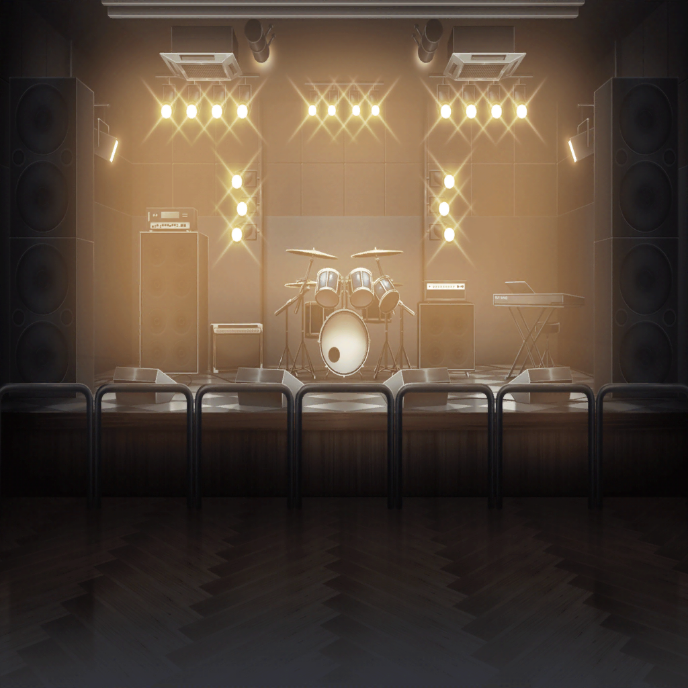
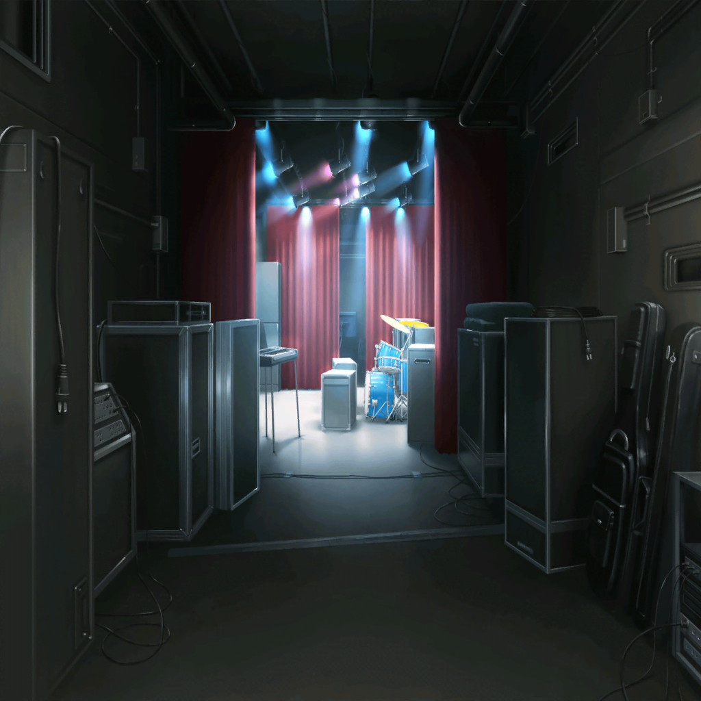
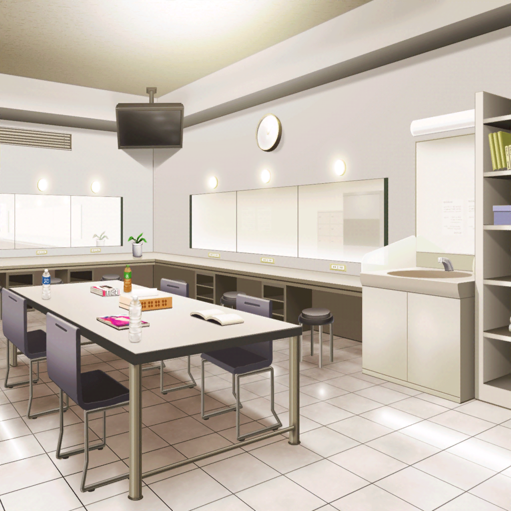

SPACE ステージ
香澄
じゃーん！
見て見て、ペンライト！ 持ってきた？
有咲
振らないし
香澄
えー、貸そっか？
有咲
いらねー。
てか、山吹さんは？
誘うって言ってなかったか？
香澄
誘ったんだけど、ダメだって
有咲
まあ、休日は店も忙しいだろうしなー
香澄
りみりんはどうしたんだろうね？
次、グリグリだよ？
有咲
姉ちゃんのとこにでもいるんじゃね？
香澄
あれ……？
ステージに出て来た人達、グリグリじゃないよね？
出演バンドメンバーA
ね、ちょっと！ グリグリが……！
出演バンドメンバーB
マジで！？ わかった、すぐ準備しよ！
有咲
？ なんかあったのか？
香澄
わ、わかんないけど……行ってみよう

出演バンドメンバーC
MC、伸ばしますか？
SPACEスタッフ
すみません！ できるだけ引っ張ってください！
りみ
……お姉ちゃん。どうしよう……
香澄
りみりーんっ！
何かあったの！？
りみ
香澄ちゃん……
お姉ちゃん達、まだ来てなくて……
香澄・有咲
えっ！？
りみ
台風で飛行機が遅れちゃって……
まだ修学旅行から戻ってないの
りみ
空港から向かってるって連絡があったけど、
ライブにはもう……
香澄
で、でも、向かってるんだよね！
それなら、来るまで待てば……
オーナー
ダメだね
香澄
ひゃっ！？
オ、オーナー……さん！？
オーナー
客を待たせるなんて許さないよ
オーナー
何があろうとステージに立つ……
客の期待を裏切るようなバンドはダメだ
香澄
もし間に合わなかったら……？
オーナー
二度とうちの敷居をまたがせない
香澄・りみ
そんな……！
出演バンドメンバーC
り、りみちゃん！
できるだけ、うちらで引き伸ばしてみるから……
ゆりさん達には急いでもらって……！
りみ
は、はい！
数時間後
SPACEスタッフ
オーナー！
最後のバンドのステージが終わりました！
オーナー
……間に合わなかったようだね。
さっさと片付けをはじめるよ
りみ
お姉ちゃん……
香澄
（ど、どうしよう……このままじゃグリグリが……）
有咲
お、おい、どこ行くんだよ？
香澄
ステージ！
ゆりさん達が来るまで、引き伸ばさなくちゃ！
有咲
はあ！？ わけわかんねー！
ステージに出て、何ができんだよ！
香澄
な、何もできないかもしれないけど……
香澄
でも、何もしなかったら終わっちゃうんだよ！？
そんなの、絶対ヤだよ！
りみ
香澄ちゃん……
有咲
わ、ちょっと待てって！
あーもう、マジかよ、あいつ〜！
客A
あれ？ もう終わり？
グリグリ出ないの？
客B
えー、どうする？
楽しみにしてたのになー……もう帰ろっか？
香澄
こ、こんにちは！ 戸山香澄です！
客A
？ 誰……？
香澄
（うう、どうしよう。何かしなくちゃ……
そ、そうだ！ 歌！ えっとえっと……）
香澄
きらきらひかる、おそらのほしよ〜♪
有咲
き、きらきら星って……
おい、早く戻れって！ ヤバいぞ！
香澄
有咲……！
お願い、力を貸して！
有咲
い、いやいやいや、無理だから！
……って、腕引っぱんな〜！
有咲
（ゲッ！ お客さん、すげーこっち見てる！
マ、マジか、うちに帰りたい……）
有咲
うう、仕方ねーな！ やってやる！
オーナー
…………
SPACEスタッフ
す、すみません、オーナー！
あの子達、勝手に……すぐに止めますから！
オーナー
……もう少しだけ待ってやりな
りみ
（香澄ちゃん、有咲ちゃん……
私、このまま何もできないままでいいの……？）
りみ
（かっこ悪くても、間違えても……
私が今、できることをしなくちゃ……
香澄ちゃんも有咲ちゃんもがんばってるんだから！）
有咲
一曲歌い終わったけど、どうすんだよ……？
客A
やっぱグリグリ出ないのかなー……
うーん、帰ろっか……
香澄
ど、どうしよう、お客さん帰っちゃう……！
有咲
そりゃ、きらきら星じゃ限界あるだろ！
りみ
香澄ちゃん……！
有咲ちゃん……！
香澄
！ り、りみりん！？
有咲
持ってるの、それ、ベース……？
りみ
お、お姉ちゃんもみんなも絶対に来るから……！
だから、一緒に……お願い……！
香澄・有咲
……うん！
香澄
きらきらひかる〜、おそらのほしよ〜♪
有咲
（きらきら星のベースアレンジか……！）
香澄
（りみりんすごい！ カッコいい！）
ゆり
……おまたせ！
りみ
お姉ちゃん！
ゆり
ありがとう！ ここからは私達に任せて！
ゆり
SPACE！ まだまだ元気ありますか！

ライブ終了後
SPACE 楽屋
ゆり
みなさん、本当にごめんなさい……！
香澄
私達も勝手にステージに上がって……ごめんなさい！
ゆり
オーナー、ご迷惑をおかけしてすみませんでした。
あの、私達……
オーナー
……客が満足して帰ったならそれでいい。
けど、次はないよ。気をつけな
ゆり
オーナー……！
香澄
ゆりさん達、許してもらえてよかったね！
りみ
うん……
SPACEスタッフ
ちょっとあなた達、もう二度とあんなことしちゃダメだよ！
香澄
わあ！ ご、ごめんなさい！
SPACEスタッフ
結果的にグリグリのステージができて、
お客さんが喜んでくれたからよかったけど、
ダメなものはダメ！ わかった！？
香澄
は、はい！ もうしません！
香澄
あ、あはは、怒られちゃったね……
有咲
怒られるに決まってんだろ！
有咲
私まで巻き込みやがって〜
めちゃくちゃ恥ずかしかったんですけど！
りみ
でも、２人のおかげでステージに立てた……
怖かったけど、楽しかったよ
りみ
もしまだ間に合うなら、
私も２人と一緒にバンドしたい……！
香澄
りみりん……！ もちろんだよ！
香澄
それじゃあ、次は文化祭だね！
有咲
はあ！？
文化祭、どっから出て来た！？
香澄
ギターを返してもらいに生徒会室に行った時に聞いたんだ！
申請すれば、体育館でやるライブステージに出られるんだって！
有咲
だってって……
まだろくに弾けないのに無理だろ
有咲
つーか、私まだ一緒にバンドやるとは……
香澄
いっぱい練習すれば絶対大丈夫！
一緒にがんばろ、有咲、りみりん！